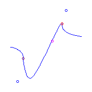
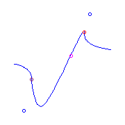

Previous: 5.15 Quintics with a beak
Up: 5. Maximally Inflected Quintics
5.16 Maximally Inflected Quintics with a ramification of order at least 5
This file displays maximally inflected quintics with at least one ramification
point of very high order, 5 or 6.
The table below summarizes the possible types of ramification, and our symbol
for each type.
The linked indices are to the spot in this file where curves with that
ramification are displayed.
| Name | Index | Partition | Germ | Symbol |
| Flex | (0,1,3) | 1 |
(s,s3) |
Red Circle |
| Cusp | (0,2,3) | 11 |
(s2,s3) |
|
| Planar | (0,1,4) | 2 |
(s,s4) |
Green Circle |
| Claw | (0,2,4) | 21 |
(s2,s4)
| |
| Flat Flex | (0,1,5) | 3 |
(s,s5) |
Magenta Circle |
| Box | (0,3,4) | 22 |
(s3,s4) | |
| Beak | (0,2,5) | 31 |
(s2,s5) | |
| | (0,3,5) | 32 |
(s3,s5) |
Maroon Circle |
| | (0,4,5) | 33 |
(s4,s5) | |
Pictures of these germs are found here.
Ramification of type (0,3,5).
Consider curves with one point whose index of ramification is
(0,3,5).
Since |(0,3,5)|=5, the additional ramification has total weight 4.
Also, this singularity has 4 adjoint conditions, so such curves have at most
two nodes.
The file used to draw these pictures is found here.
If the rest of the ramification is concentrated in one point it must be
(0,2,5), and there is a unique such curve.
We give two different pictures of that curve:
There is a unique curve (up to reparameterization) with additional ramification
a claw (0,2,4) and a flex
 There is likewise a unique curve (up to reparameterization) with additional
ramification a flat flex (0,1,4) and a
flex.
It has 2 solitary points, indicated by the blue
circles.

There is a unique curve (up to reparameterization) with additional ramification
two planar points.
This has one solitary point and one real node.
There is a unique curve (up to reparameterization) with additional ramification
one planar point and a cusp.
This has one solitary point, which is located very
close to the curve. The second picture displays the region near the solitary
point, indicated there by a blue cross.
point
There is likewise a unique curve (up to reparameterization) with additional
ramification a flat flex (0,1,4) and a
flex.
It has 2 solitary points, indicated by the blue
circles.

There is a unique curve (up to reparameterization) with additional ramification
two planar points.
This has one solitary point and one real node.
There is a unique curve (up to reparameterization) with additional ramification
one planar point and a cusp.
This has one solitary point, which is located very
close to the curve. The second picture displays the region near the solitary
point, indicated there by a blue cross.
point
 There are two curves with a given placement of additional ramifications
one planar point and two
flexes.
There are two isotopy types of such ramification.
The first has consecutive flexes.
One of the resulting curves has a real node while the other does not.
One of the solitary points of the second curve is very close to the curve, and
the third picture magnifies the region near that solitary point.
Curves in the other isotopy type have 2 solitary
points, one of which is very close to the curve.
For the second curve, we magnify the region near one of its solitary points,
which is indicated by a blue cross.
There are no curves with 2 cusps.
There is a unique curve with a cusp and two flexes,
but two different isotopy types.
One has a real node, while the other has a solitary
point, which is very near to the curve.
The third picture magnifies the region near that solitary point.
There are three curves with a given choice of four additional
flexes.
The last two curves with two solitary points
are isomorphic as curves in RP2.
Interestingly, the solitary point that is close to the curve in one picture is
far from the curve in the other.
There are two curves with a given placement of additional ramifications
one planar point and two
flexes.
There are two isotopy types of such ramification.
The first has consecutive flexes.
One of the resulting curves has a real node while the other does not.
One of the solitary points of the second curve is very close to the curve, and
the third picture magnifies the region near that solitary point.
Curves in the other isotopy type have 2 solitary
points, one of which is very close to the curve.
For the second curve, we magnify the region near one of its solitary points,
which is indicated by a blue cross.
There are no curves with 2 cusps.
There is a unique curve with a cusp and two flexes,
but two different isotopy types.
One has a real node, while the other has a solitary
point, which is very near to the curve.
The third picture magnifies the region near that solitary point.
There are three curves with a given choice of four additional
flexes.
The last two curves with two solitary points
are isomorphic as curves in RP2.
Interestingly, the solitary point that is close to the curve in one picture is
far from the curve in the other.
Ramification of type (0,4,5).
If this ramification is at infinity, the quintic has
affine equation y=f(x), where f is a
quintic polynomial.
The other ramification of this curve occurs at the roots of the second
derivative of f, a cubic.
The curve is maximally inflected if f is real and these roots are real.
This cubic has either three simple real roots, one double real root and one
simple real root, or a triple real root.
Thus there are three maximally inflected quintics with a single ramification
(0,4,5):
The file used to draw these pictures is found here.
Previous: 5.15 Quintics with a beak
Up: 5. Maximally Inflected Quintics